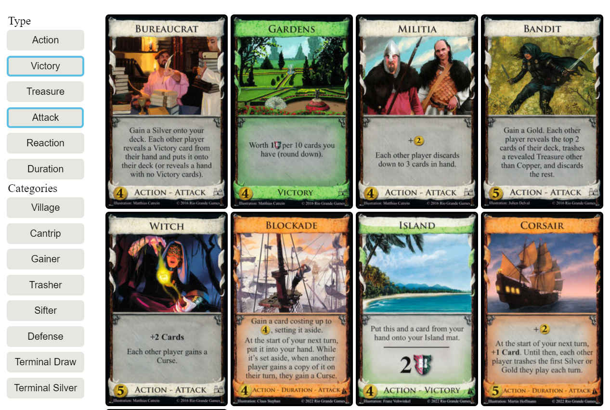
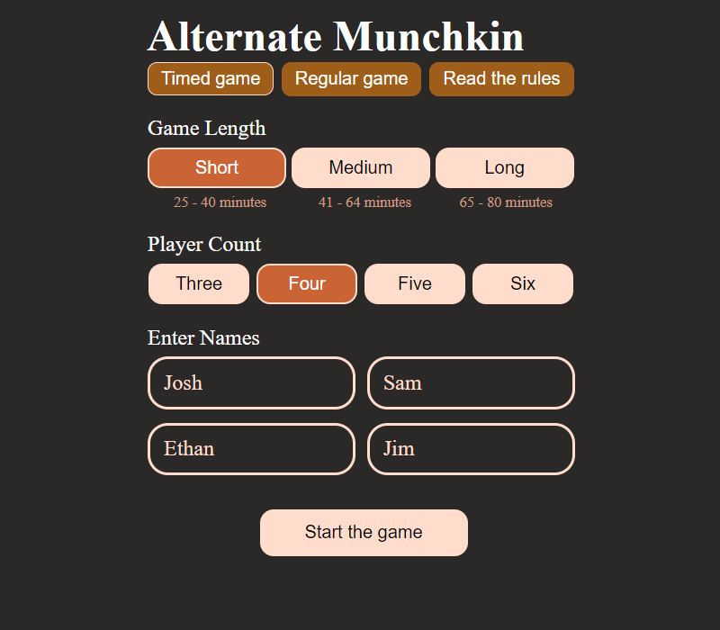
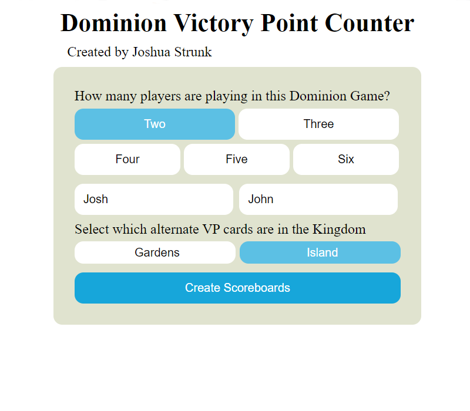

A web application built to select certain cards from the popular card game Dominion. Selecting different filters will show a different set of cards depending on whether a card matches under the card type or category.
Check It Out Here
Dominion Card Selector

Munchkin Alternate Mode

Web application built to facilitate playing an alternate version of rules for the card game Munchkin. This tool allows the user to select the number of players, enter custom player names, and select a desired game length range. Once the game is started, a timer is set within the selected range and the user is provided with a level tracker to show the winner once the game is finished.
Check It Out Here
Dominion Score Counter

A score tracking web application built to be used during a game of the popular deck building card game Dominion: included is a menu to select specifics of the game: number of players, player names, and tailored cards used in a game.
Once the menu is finished the user is shown a number of counters, based of off number of players, each with a score counter so that players can easily identify who is winning at a glance. Along with the total Victory Point counter there are seperate subcounters for the each type of card that was selected to be in the kingdom. These increase, or decrease, the player's score by the correct number of Victory Points.
Check It Out Here